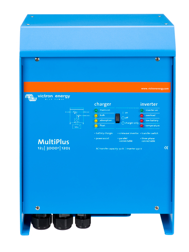

Video created by youtuber: SciToons on 13th of march 2017, all rights are reserved to their respective owner(s)

SUNNY BOY 3.0-6.0
Link naar product
Sunny boy zorgt ervoor dat uw zonnepanelen optimale energie verwekken. Makkelijk en overzichtelijk niet alleen in de installatie maar ook met het gebruik.
Het systeem van Sunny Boy detecteerd automatisch fouten en lost deze ook zelfstandig op. Sunny boy beschikt ook over optimale prestaties wanneer er alleen schaduw is, dit wordt geregeld
door de SMA Shadefix feature op de Sunny Boy. Dit is èèn van de vele features waarover de Sunny Boy beschikt. Sunny Boy is ideaal voor gebruikers die via hun smartdevice een
overzicht willen hebben over de stroomopwekking van hun zonne-energie. Image is taken from the linked product website, all rights are reserved to their respective owner(s).

Victron-Energy-MultiPlus-12V-3000W-120-50
Link naar product
De victron-energy-multiplus-12v-3000w-120-50 ook wel gewoon 'multiplus' genoemd, is een zeer krachtige sinusomvormer, acculader en omschakelautomaat.
Deze multiplus beschikt over een vele eigenschappen waaronder : true sine wave inverter, adaptive charging, hybrid powerassist technology en nog meer.
De unique powerassist feature dient voor het voorkomen dat de batterij overvol raakt, deze multiplus zal dan meteen de stroom doorsturen naar de output van een generator of naar een andere bestemming.
Verkrijgbaar in verschillende modellen zoals de : 800Va, 1200VA , 2000VA , 3000VA en 5000VA. Image is taken from the linked product website, all rights are reserved to their respective owner(s).

Victron EasySolar 24V 3000W 70A-50 MPPT Color Control
Link naar product
Victron easysolar 24/3000/70-50 MPPT is een all-in-one stroomoplossing, deze 3000w 230v omvervormer en 70a acculader is de meest efficiente en ultime stroomoplossing voor uw zonne-energie. Deze Victron easysolar combineert een MPPT zonne-laadcontroller, een omvervormer/lader en een wisselstroomverdeling in één behuizing.
En is tevens nog makkelijk te installeren ook.
De easysolar beschikt ook over features zoals PowerAssist , waardoor de generator of oplader niet overvol raakt. Wanneer dit gebeurd zal de PowerAssist de stroom automatisch ergens anders heen sturen.
Image is taken from the linked product website, all rights are reserved to their respective owner(s).